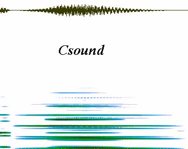
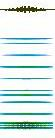
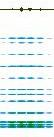
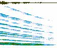

For more extensive information about Csound you should purchase and read Rick Boulanger's The Csound Book. This wonderful volume includes in-depth coverage of basic and advanced uses for Csound, as well as numerous instructive tutorials. It's a "must have" item for all students of electroacoustic music.

Music & sound composition using the computer can be realized at a very low cost, and this page explains how to get started with some powerful inexpensive audio processing tools. Use the links to obtain the programs described, and please, remember to cough up the few bucks asked for the shareware stuff. The authors typically don't ask for much, and registration will inspire them to go on creating more of this sort of great software. Okay, I'm off my soapbox, now on to the heart of the matter...
Here is a simple Csound orc/sco file combination:
;;; Orchestra file header (test01.orc)
sr=22050 ; sample rate
kr=441 ; control rate
ksmps=50 ; number of samples in control period (sr/kr)
nchnls=1 ; number of output channels
;;; Instrument definitions
instr 1
kenv1 linseg 0,p3/2,p4,p3/2,0 ; envelope for amplitude
asig1 oscil kenv1,p5,1 ; oscillator unit generator, sine wave at frequency p5
kenv2 linseg 0,p3/2,p4,p3/2,0
asig2 oscil kenv2,p5+55,2 ; sawtooth wave
kenv3 linseg 0,p3/2,p4,p3/2,0
asig3 oscil kenv3,p5+110,3 ; square wave
out asig1+asig2+asig3
endin
;;; Score file (test01.sco)
f1 0 1024 10 1 ; GEN function #10, creates sine wave table
f2 0 1024 10 1 .5 .3 .25 .167 .14 .125 .111 ; sawtooth wave
f3 0 1024 10 1 0 .3 0 .2 0 .14 0 .111 ; square wave
;p1 p2 p3 p4 p5
i1 0.00 1.50 5000 220 ; instr 1 plays a combined sine/sawtooth/square wave at
; amplitude value 5000, 220 cps base frequency, for 1.5 seconds
These separate files are compiled together so:
Csound -otest01.wav -W test01.orc test01.sco
which will then produce the soundfile test01.wav in Microsoft WAV format. At this point that wavefile can be further processed by Csound, or you can edit it with a wave editor.
 test01 (67k 22050Hz 16-bit WAV file)
In the next example an amplitude envelope is applied to an existing soundfile:
;;; Orchestra file (soundin1.orc)
sr=22050
kr=441
ksmps=50
nchnls=1
instr 1
asig soundin "test01.wav",0 ; input wavefile, starts at 0.00 secs,
; will play for duration of p3
kenv linseg 0,p3/12,1,p3/12,0,p3/12,.95,p3/12,0,p3/12,.90,p3/12,0,p3/12,.85,p3/12,0,p3/12,.80,p3/12,0,p3/12,.75,p3/12,0 ; 12-stage amplitude envelope
aout = asig*kenv ; applied to soundfile
out aout ; and out...
endin
;;; Score file (soundin.sco)
;p1 p2 p3 i1 0.00 1.50 ; Instrument 1 plays the output event (aout) for 1.5 secs
These separate files are compiled together so:
Csound -o soundin1.wav -W soundin1.orc soundin1.sco
which will then produce the soundfile soundin1.wav in Microsoft WAV format. Again, the wavefile can now be further processed by Csound, or edited in a wave editor such as Cool Edit.
 soundin1 (67k 22050Hz 16-bit WAV file)
Finally, here's an example illustrating the use of the phase vocoder. The analysis file is prepared by using the utility pvanal, then resynthesized using the pvoc unit generator:
;;; Orchestra file (pvc01.orc)
sr=22050
kr=441
ksmps=50
nchnls=1
instr 1
ktim linseg 0,p3/2,3.00,p3/2,0 ; file to play until end, then backwards to beginning
kfmod linseg 2.0,p3/2,.50,p3/2,1.75 ; a sweeping pitch envelope
asig pvoc ktim,kfmod,"test01.pvc" ; fileplay and pitch envelopes applied to analysis file
aout = asig
out aout
endin
;;; Score file (pvc01.sco)
;p1 p2 p3 i1 0.00 3.00 ; Instrument 1 plays the output event (aout) for 3 secs
These files are compiled together so:
Csound -o pvc01.wav -W pvc01.orc pvc01.sco
pvc01 (129k 22050Hz 16-bit WAV file)
Note: When downloading Csound, be sure to retrieve the documentation. Csound is a complex program, and getting the most from it will require that you read the manual. You should also refer to the Csound Front Page for more information.
Soundin2.wav was made by processing soundin1.wav (from the second Csound example above) with transform options in Cool Edit. Processing included time and frequency domain alterations, loop copy & paste, amplitude normalization and fade, and the old "reverse/add reverb/reverse again" trick.
 soundin2 (186k 22050Hz 16-bit WAV file)
In SS01.wav, test01.wav was used as a sound-source for a quick scale passage.
SS01 (119k 22050Hz 16-bit WAV file)
Note: Both Csounder and SoftSamp require Csound, so you will need to download and properly install Csound before these programs will work.
Barry Vercoe at MIT for Csound itself
John Fitch at Bath UK for the PC versions
David Johnston at Syntrillium Software for Cool Edit
Dustin Barlow and Tim Mielak at Omnids for Csounder and SoftSamp"Not the soapbox again !"
Please note that while Csound is freeware, Cool Edit, Csounder, and SoftSamp are shareware. Be sensible: if you use these programs a lot, register with their creators. These tools are very powerful, in many cases even going beyond what similar commercial programs offer. So, do the right thing already, okay ?